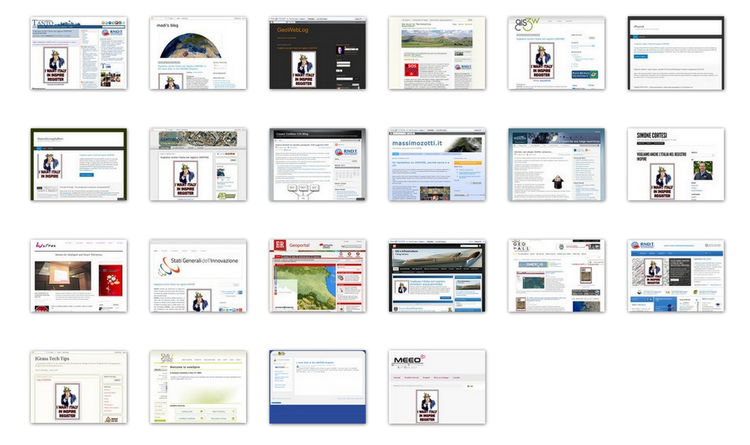

Condividi con noi questa richiesta
Puoi condividere con noi questa campagna in diverse modalità. Eccone alcune.
Sul tuo sito web
Così come facemmo in tanti nel 2014 in occasione di #italy4INSPIRE, pubblica sul tuo sito questa richiesta. Usa liberamente il testo che trovi in homepage e/o le immagii che trovi qui.
Sulla tua pagina facebook
Fai copia e incolla sulla tua bacheca facebook il testo sottostante e pubblicalo.Vogliamo RNDT nel registro INSPIRE http://bit.ly/rndt4inspire #RNDT4INSPIRE
Sul tuo account twitter
Copia il testo sottostante e usalo con il tuo account su twitter.Vogliamo anche @RNDT_IT nel registro INSPIRE http://bit.ly/rndt4inspire #RNDT4INSPIRE
Sul tuo account twitter, con destinatario/i
Invia lo stesso testo a uno o più degli utenti più sensibili a questa richiesta. Qui sotto degli esempi:Vogliamo @RNDT_IT in INSPIRE http://bit.ly/rndt4inspire #RNDT4INSPIRE @glgalletti @minambienteIT @erealacci @VeloSilvia @barbaradegani
Vogliamo @RNDT_IT in INSPIRE http://bit.ly/rndt4inspire #RNDT4INSPIRE @Palazzo_Chigi @AgidGov @matteorenzi @mariannamadia @Montecitorio
Vogliamo @RNDT_IT in INSPIRE http://bit.ly/rndt4inspire #RNDT4INSPIRE #gruppoinnovazione @coppolapaolo @quinta @paolo_barberis @diegodelorenzis
We want @RNDT_IT in INSPIRE http://bit.ly/rndt4inspire #RNDT4INSPIRE @inspire_eu @INSPIREGeoport @EUEnvironment @KarmenuVella @EU_ENV
We want @RNDT_IT in INSPIRE http://bit.ly/rndt4inspire #RNDT4INSPIRE @europainitalia @sandrogozi @DipPoliticheUE @ISPRA_Press @EU_Commission
Newsletter, forum, mailing list, email, segnali di fumo ...
Nel modo che preferisci e che ti sembra più efficace. Il messaggio è sempre lo stesso: Vogliamo il Repertorio Nazionale dei Dati Territoriali nel Registro Inspire!Se serve un'immagine ...